![Kyber Controls]()
Making your droid talk with Kyber Echo
Kyber Echo is the sound board inside your droid. It stores your sound library and controls when each sound plays. It can play up to three sounds at once: drive-motor audio, dome-movement audio, and user-triggered effects. The lights and jaw can also move in sync with playback.
You control Kyber Echo from your radio and configure it through a web interface hosted by the droid. No app, cable, or disassembly is required. This guide explains each page of the interface and every available setting.
01Before you start
You need three things. No tools are required.
- Your droid, powered up Give it a few seconds. The screen runs through its checks, then settles into its normal display, which means it is ready.
- Your radio During normal use, its sticks and switches trigger the sounds. The web interface only determines which sound is assigned to each control. Sections 06 onward assume that your radio is available.
- A device with a web browser Any device that can connect to Wi-Fi and open a web page: a laptop, desktop, tablet, or phone. Use the largest screen available for the initial setup because the mapping tables are wide and contain many labels. Every feature remains available on a small screen, but wide tables scroll horizontally.
02Opening the web interface
A new droid does not yet know your Wi-Fi network name or password, so it cannot connect to your network. Instead, it creates its own temporary Wi-Fi network for the initial setup.
-
Look for a network called
ECHO_xxxxJoin it as you would any other Wi-Fi network. The password is12345678unless you have changed it. The four characters at the end distinguish your droid from other nearby droids. -
Open
192.168.4.1in your browser Type it into the address bar exactly as written. The web interface loads. - Ignore the "no internet" warning The warning is accurate: this network has no internet connection. It only provides access to the droid's web interface.
Once you are connected, the address shown on the droid's screen is always the current one. When in doubt, read it there.
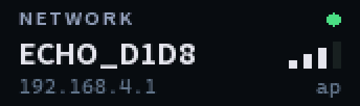
03The web interface at a glance
The web interface has seven pages, listed on the left. You will use a few of them regularly; the others usually require only initial configuration.
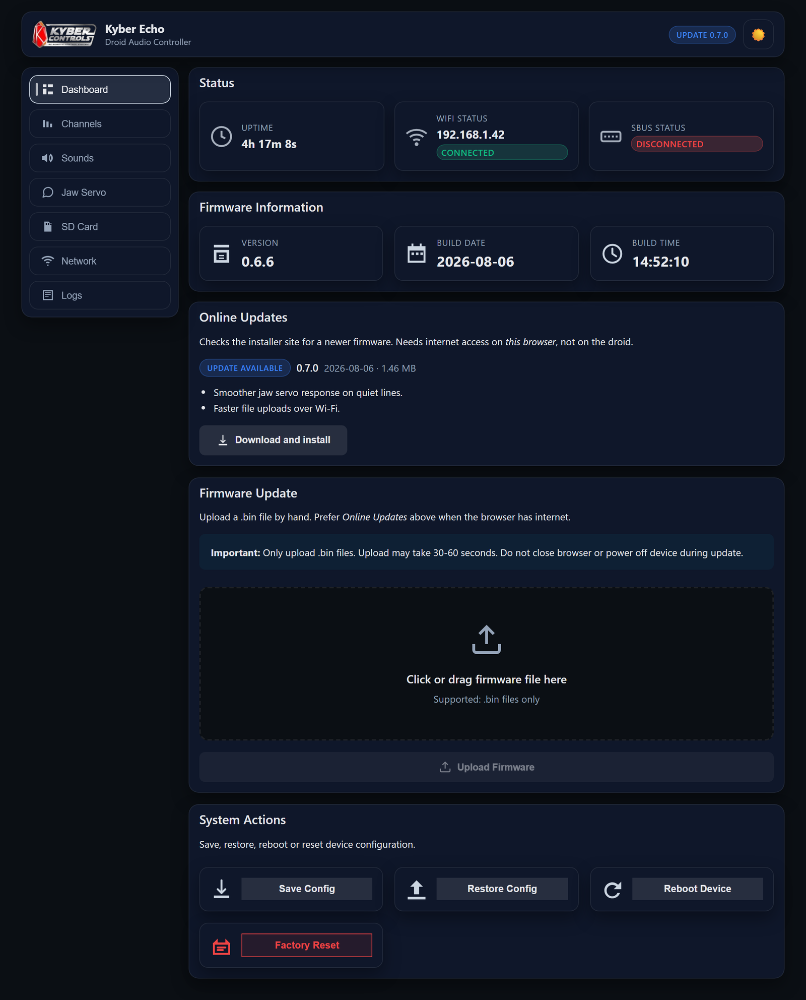
| Page | What it is for |
|---|---|
| Dashboard | The droid's current state, plus updates, backups and restart. |
| Channels | Which control on your radio does what. Set up once, early on. |
| Sounds | Which sound plays when. The page you will return to most often. |
| Jaw Servo | If your droid has a moving jaw, how it follows the voice. |
| SD Card | Your sound library — add, listen, rename, remove. |
| Network | Wi-Fi and how to join yours — the next section. |
| Logs | The droid's own messages. Worth checking when something is not behaving. |
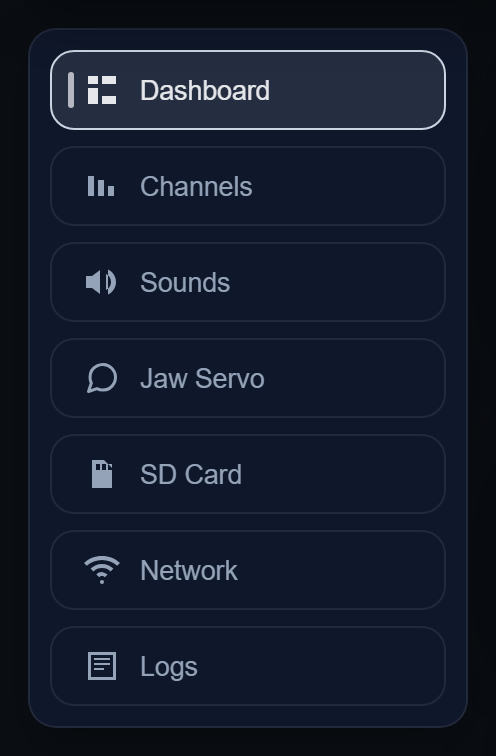
The top bar contains a light/dark switch and, when a newer software version is available, a small update badge. The bar appears on every page.
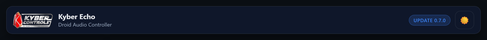
04Joining your Wi-Fi network
This step is optional but recommended at home. Once the droid joins your Wi-Fi, you can reach the web interface without disconnecting from your network. When your network is unavailable, the droid falls back to its own Wi-Fi network. No manual switching is required.
Open the Network page. It is in three parts.
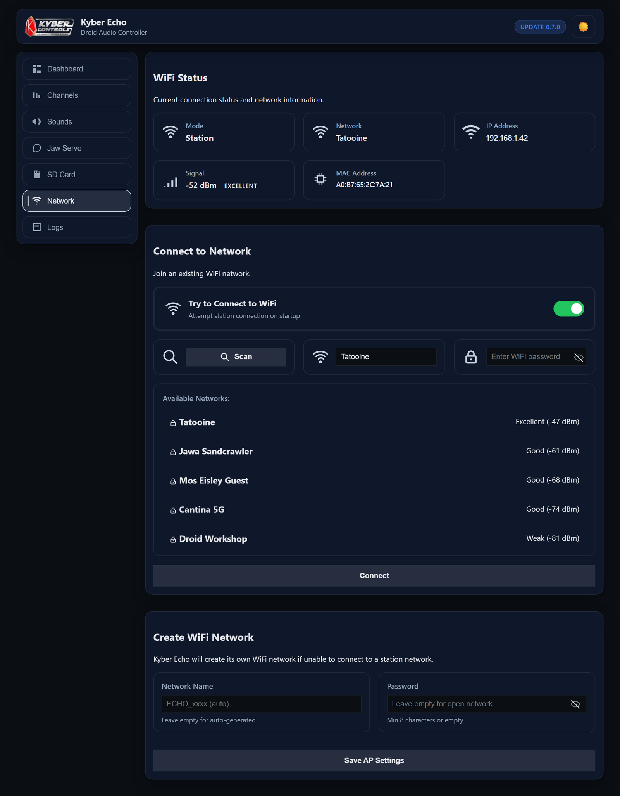
Wi-Fi Status
Shows the current network, address, and signal strength. Check here first whenever the web interface is difficult to reach.
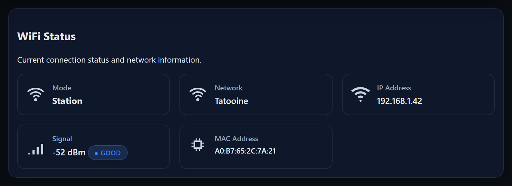
Connect to Network
- Switch on Try to Connect to WiFi When this option is disabled, the droid does not look for your network and always creates its own.
- Press Scan, then tap your network in the list Selecting a scan result fills in the network name and avoids typing errors.
-
Enter the password and press Connect
Then restart the droid. It will connect to your saved network automatically and fall back to its own network when yours is unavailable. Its address changes with the network, so
192.168.4.1may no longer apply. Read the current address on the droid's screen before opening the web interface again.
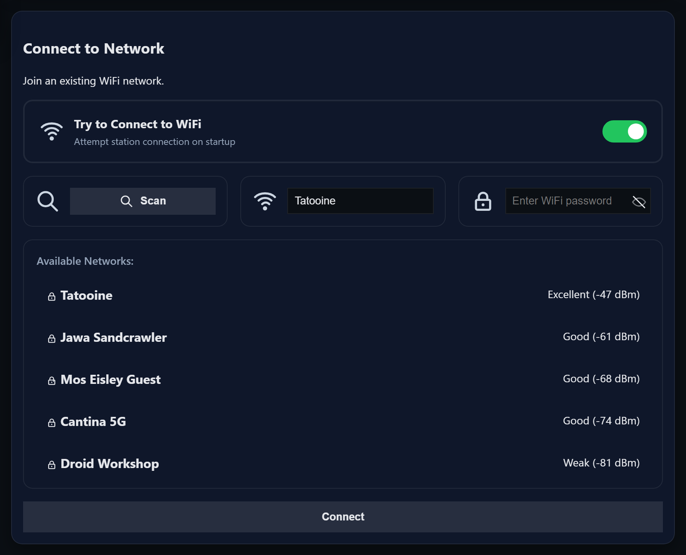
Create WiFi Network
Changes the name and password of the droid's own network. Leave the name blank to keep the automatic ECHO_xxxx. The password must be at least 8 characters; leaving it blank creates an open network. Changes to the name or password take effect only after the droid restarts. Until then, the current name and password remain active.
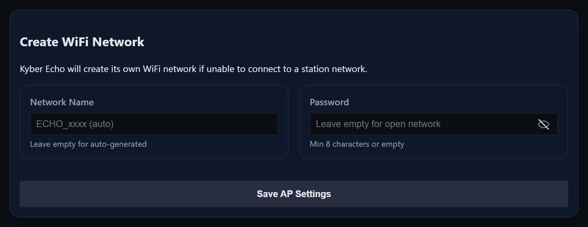
12345678, so anyone nearby who knows the default could access the web interface. Set a unique password during the initial setup.
05Adding your own sounds
Upload your sound files before configuring the Sounds page. The web interface accepts both MP3 and WAV files.
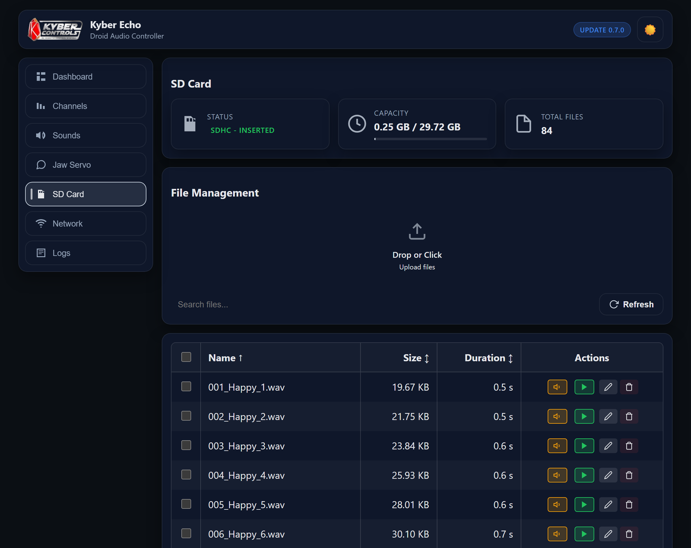
Open SD Card. Drag files onto the upload area, or select the area to browse. You can upload multiple files at once. MP3 and WAV files are converted to the required playback format during upload.
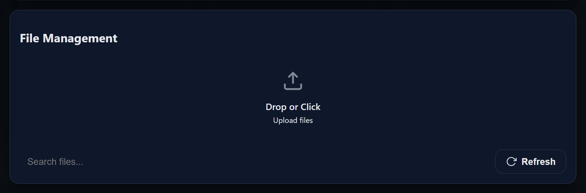
Names are how sounds are identified
Every sound is identified by a number from 001 to 999, which you will select later on the Sounds page. You can add a descriptive name after the number. The droid ignores the descriptive part, but it makes the file list easier to read.
- Fine
- 001.wav
- Better
- 001_Leia.wav
- Also fine
- 042_Angry_Whistle.wav
- No good
- whistle.wav
- No good
- 0001.wav
Filenames must begin with exactly three digits. A filename without a number is ignored. If it begins with four digits, the droid reads only the first three and may assign the file to the wrong number. For example, 0001.wav is read as 000, which cannot be selected on the Sounds page.
Listening before you use a file
Each file offers two ways to hear it, and the difference matters:
| Button | What you hear |
|---|---|
| Play on device | Plays through the droid's speaker. Use this to judge how the sound will be heard from the droid. |
| Preview | Plays through your browser and speakers. Use this to identify files quickly; playback may sound different on the droid. |
| Rename | Changes the number used to identify the sound. See the warning below. |
| Delete | Deletes one file, or several selected files at once. |
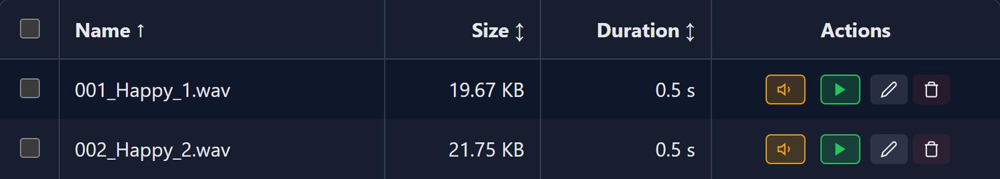
012_Beep.wav to 031_Beep.wav, every button assigned to 012 will play another file at 012 or nothing at all. Decide on your numbering early and keep it consistent.
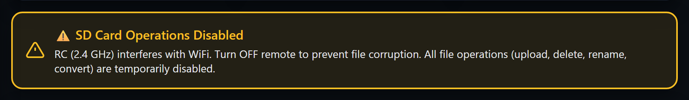
If a sound does not play
Check the filename first. The droid reads the first three characters, and all three must be digits. 001.wav is valid; 0001.wav is read as 000, which cannot be assigned to a button. The file remains visible in the list but cannot be played from the Sounds page.
Files uploaded through the web interface are converted automatically to the format required by the droid. This conversion does not normalize their perceived loudness. Files copied directly to the card with a card reader are not converted, so they are more likely to cause format-related playback problems.
06Channels — assigning your radio's controls
Your radio sends the droid a set of numbered channels. Use this page to assign each channel to the control it carries.
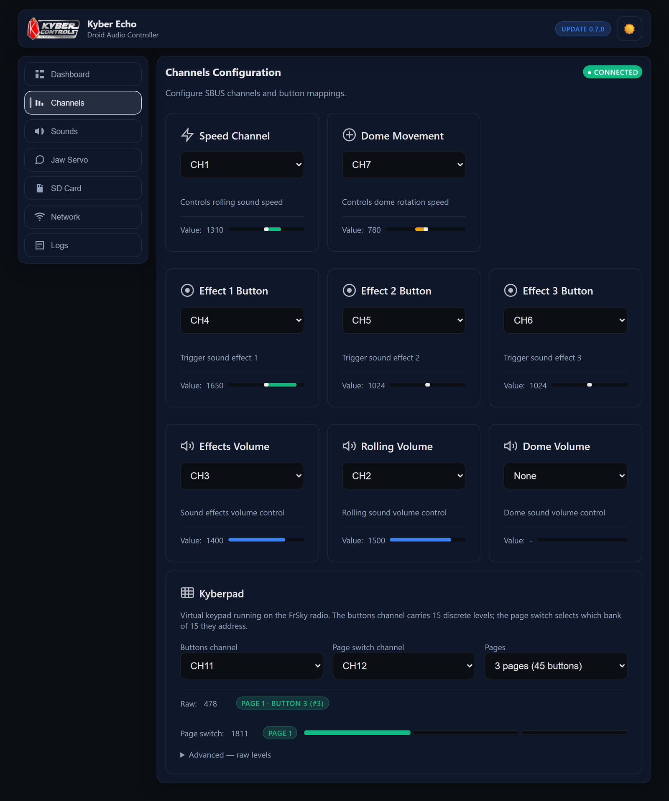
Correct channel assignments are required before the remaining controls can work. The process usually takes about a minute.
| Set this | To the channel that carries… |
|---|---|
| Speed Channel | Your drive stick. The rolling sound rises and falls with it. |
| Dome Movement | Your dome control, with its own sound doing the same. |
| Effect 1 / 2 / 3 Button | A switch or button you want to trigger sounds with. Each one gives you two triggers; see Sounds. |
| Effects / Rolling / Dome Volume | A knob or slider, one per family of sounds. Assign at least one because the web interface has no volume control. You can assign the same channel to all three so that one knob controls every sound. |
| Kyberpad | Kyberpad, if you use it. Its card is at the bottom of this page, and it needs a second channel for the page switch. |
How to set them
Do not work this out on paper. Every card on this page shows its channel moving in real time, so the reliable method is to pick a channel, move the control, and watch.
- Pick a channel from the drop-down
- Move that stick or flick that switch
- Watch the barIf the bar moves, the channel is correct. If it does not, try the next channel. The complete process usually takes about a minute.
If no channel makes the bar move, stop testing channels and check the badge at the top right of the page. It shows whether the droid is receiving a radio signal. Channel selection cannot work while the badge is red.
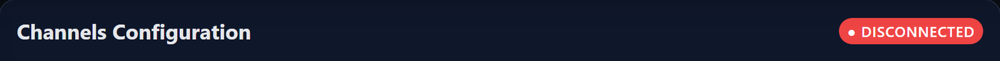
Your drive stick is on channel 1, and you have a two-way switch on channel 4 you want to trigger sounds with.
- Speed Channel
- CH1
- Effect 1 Button
- CH4
- Everything else
- None
Push the drive stick and the Speed bar sweeps. Flick the switch and the Effect 1 bar jumps to one side, then the other. That is all this page needs.
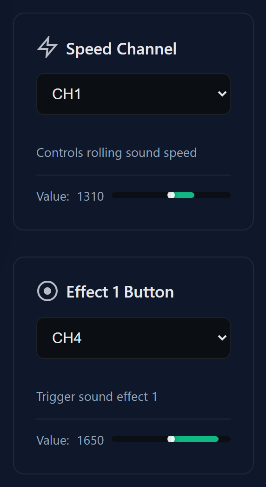
A volume knob works on sounds already playing. Turn it down halfway through a line and you hear that line fade, not the next one.
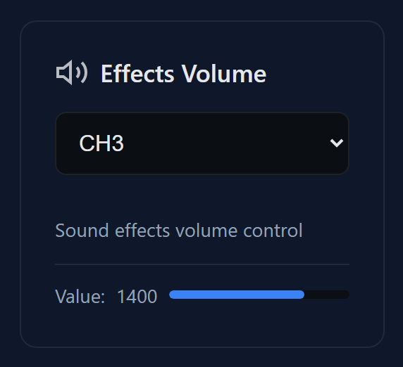
Kyberpad — connecting it to the droid
Kyberpad is optional, but it increases the number of available triggers from six to forty-five. If you do not use it, skip ahead; the three effect switches work independently, and the rest of the guide applies in the same way.
Kyberpad is a keypad that runs on the radio itself, with fifteen keys on each of three pages. The droid sees only the channel produced by Kyberpad, so configure the radio first and the droid second. Assign sounds to the keys afterward on the Sounds page.
On the radio. Configure two outputs, each on its own channel:
- Send the Kyberpad output to a channel Full travel, no trim, no expo, and no slew.
- Send the page switch to a second channel Same settings. Without it you only ever reach page 1.
In the web interface. The Kyberpad card at the bottom of this page needs the two channels you just configured and the number of pages you use. The remaining fields are live indicators and do not require input.
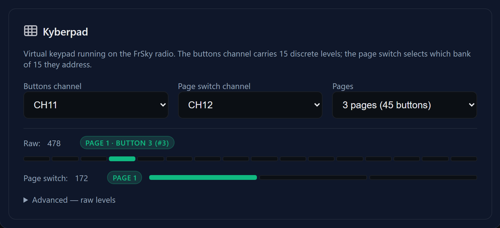
Press a key on the radio and watch the badge. It should name the key you actually pressed, on the page you are actually on. If it does, the setup is correct and everything that follows is a matter of choosing sounds. If it does not, nothing further will work: resolve it before moving on.
The web interface detects duplicate channel assignments. If Kyberpad shares a channel with a switch, knob, or its own page switch, an amber message identifies both controls so you can correct the conflict.
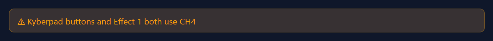
The Advanced section contains the values the droid expects from each key. It matches the default Kyberpad configuration. Change these values only if you have deliberately modified them on the radio. If they no longer match, select Restore Kyberpad defaults to restore the default values.
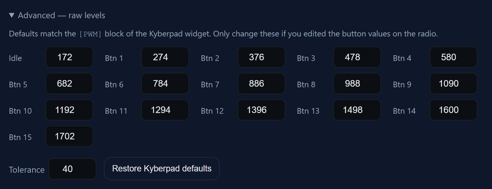
07Sounds — deciding what plays when
The Sounds page determines which sound plays for each input. The tabs across the top represent the three Kyberpad pages, plus Effects for sounds triggered directly by the radio.
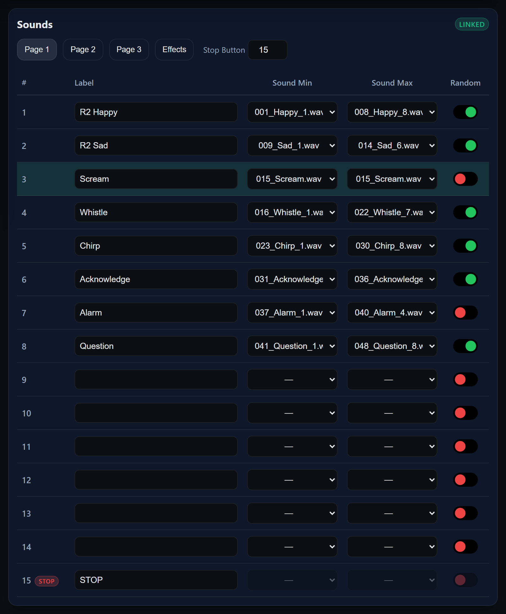
Kyberpad — choosing what each key plays
The settings on the Channels page determine how many Kyberpad tabs appear. If no Kyberpad channel is assigned, no page tabs appear. If a Kyberpad channel is assigned without a page-switch channel, only Page 1 appears and the Pages field remains disabled. Assign both channels to display the number of pages selected on the Channels page: one, two, or three.
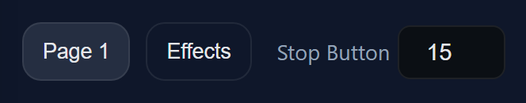
Fifteen rows, one per key, in the same order as the keys on your radio screen. Three things to fill in:
| Column | What to put in it |
|---|---|
| Label | A name for your own use. The droid ignores it, but matching the label on the radio makes both screens easier to recognize later. |
| Sound Min / Sound Max | The range of sounds available to this key. Enter the same number in both fields to play one fixed sound every time. |
| Random | When off, the key steps through its range in order. When on, it shuffles the range and plays every sound once before repeating any of them. |
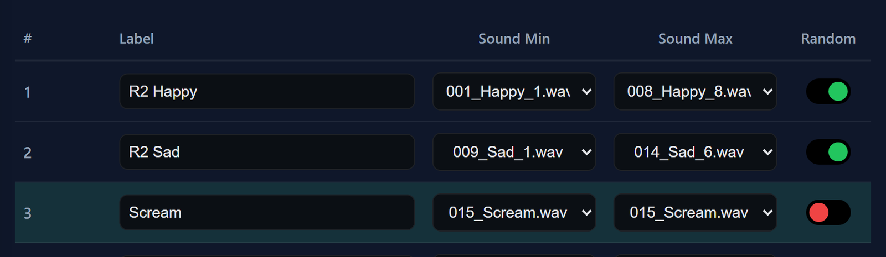
You have five whistles, uploaded as files 010 to 014, and you want key 3 to pick one at random each time.
- Label
- Whistles
- Sound Min
- 010
- Sound Max
- 014
- Random
- on
Tap key 3 five times and you hear all five whistles, in some order, with no repeats. On the sixth it shuffles and starts over.
Next to the tabs there is a Stop Button box: the number of the key, 1 to 15, that silences all playback instead of playing a sound. Each page has its own, and 0 means that page has no stop key. The row you choose is marked STOP in the table.
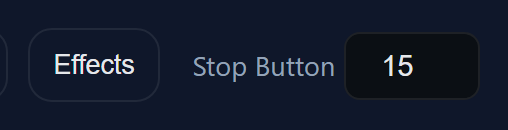
The Effects tab
All sounds triggered directly by the radio are configured here: the rolling and dome sounds, plus the three effect switches. Kyberpad adds to these controls rather than replacing them. If you do not use Kyberpad, this tab contains all of your sound assignments. Cards appear only for controls assigned on the Channels page.
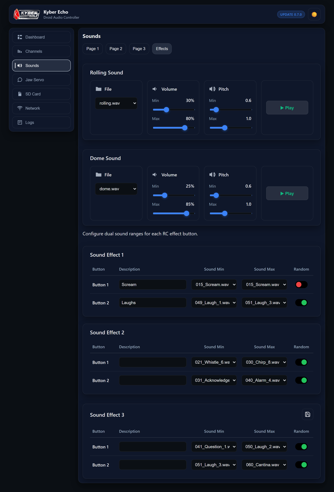
| Card | What you set |
|---|---|
| Rolling Sound | The sound that runs while driving, and how it behaves. The Min values apply at a standstill, the Max values at full speed. |
| Dome Sound | The same idea, driven by the dome instead. |
| Sound Effect 1 / 2 / 3 | Two rows each: Button 1 for pushing the switch one way, Button 2 for the other. Same three columns as a Kyberpad page. |
Rolling Sound and Dome Sound are the two cards with sliders. Each selects one file and loops it while its control is active, adjusting the volume and pitch within the ranges you set. Both cards use the same four sliders.
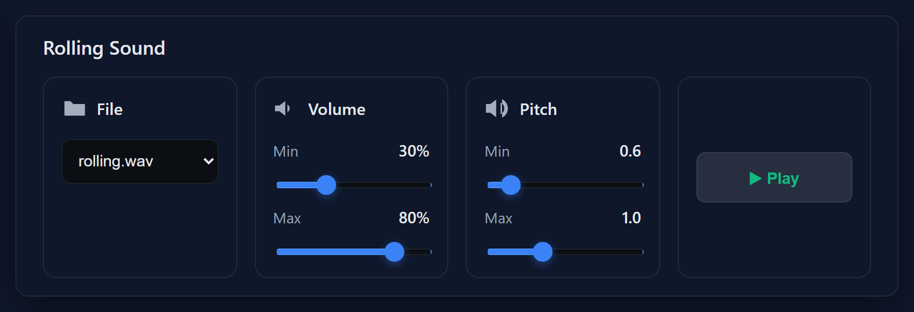
| Slider | What it does |
|---|---|
| Volume Min | The volume when the control first leaves center. Use a low value for a quiet start or a high value for an immediate, prominent sound. |
| Volume Max | How loud at full travel. Everything between the two is spread evenly across the stick, so the gap between them is the effect: a wide gap sounds like effort building, and the same value in both gives a sound that never changes. |
| Pitch Min / Max | The pitch range. 1.0 plays the file as recorded. Lower values slow and deepen the sound; higher values speed it up and raise its pitch. The range is 0.50 to 1.50, or half to 1.5 times the original speed. |
Play sends the chosen file to the droid so you can hear it without touching the radio. The button turns into Stop while it runs, and pressing it again silences it.
Narrow ranges sound more mechanical; wider ranges create a more exaggerated, cartoon-like effect. Choose the style that fits your droid.
- Restrained
- Volume 30 → 80 %, Pitch 0.90 → 1.10
- Expressive
- Volume 10 → 100 %, Pitch 0.60 → 1.30
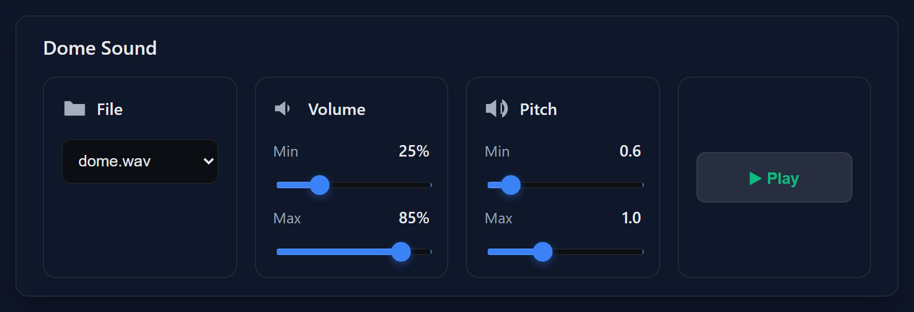
The dome reaches maximum volume at about half travel, while the drive stick reaches it at full travel. This makes the dome respond quickly to short movements. Both sounds ignore direction: forward and backward, or clockwise and counterclockwise, produce the same result. Both sounds fade instead of stopping abruptly.
The effect cards work differently. Each card has two rows, allowing three switches to provide six triggers. The center position does nothing, so a spring-loaded switch is a good fit.
Some radios can map a three-position channel to two push buttons installed in the radio's case, one for each row of the card. The droid still sees one channel with three states, with the center position representing no button press.
Spring-loaded push buttons can be more convenient for triggering sounds because they return to the center position automatically.
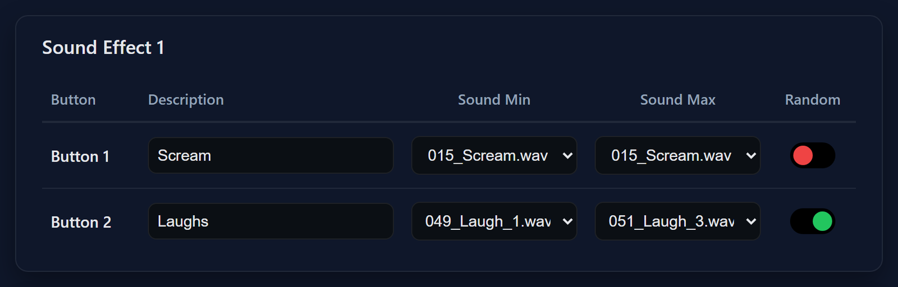
One switch, two results: flick it down for a single scream, flick it up for one of three laughs.
- Button 1 — Description
- Scream
- Button 1 — Min / Max
- 015 / 015
- Button 2 — Description
- Laughs
- Button 2 — Min / Max
- 049 / 051
- Button 2 — Random
- on
08Jaw servo (experimental)
If your droid has a moving jaw, this feature opens and closes it in time with speech. It responds only to sound effects and Kyberpad sounds; rolling and dome sounds leave the jaw closed.
| Setting | How to set it |
|---|---|
| Min — closed | Where the jaw sits at rest. Nudge it until the jaw is just closed, and no further. |
| Max — open | How far it opens on a loud sound. Raise it until the movement is visible across a room, then reduce it slightly. |
| Threshold | How loud a sound has to be to count as speech. Too low and the jaw moves when nothing is being said; too high and quiet lines are missed. |
| Release | How fast it closes again. Higher is smoother and more natural; lower closes abruptly. |
| Enable / Reverse | Enables the servo and reverses its direction. The correct direction depends on how the jaw is built. |
Every change is saved as you drag. Play a sound in a loop while adjusting the settings, then listen and watch the jaw before making the next change.
Set the Threshold with a real line of dialogue, never a test tone: a steady tone is the one sound that never behaves like speech.
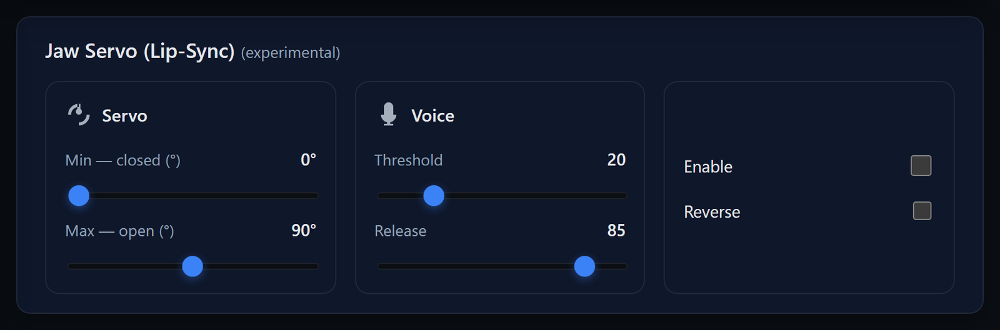
09Reading the droid's screen
The screen is your main source of status information when the droid is closed and the web interface is not open.
| What you see | What it tells you |
|---|---|
| A name, and a counter | The sound playing right now, and how far into it you are. Long names scroll. |
| Level bars | The current audio output level. Flat bars while a sound should be playing are a useful diagnostic clue. |
| Network name and address | Where to point your browser. This is the address to trust. |
| Card status | Whether the sound library was found, and how full it is. |
| Radio readout | Speed and direction, plus a row of dots for the monitored controls. A blank readout means the radio is off or its signal is not reaching the droid. |
The screen updates only when a displayed value changes, so a motionless display is normal and does not mean it is frozen.
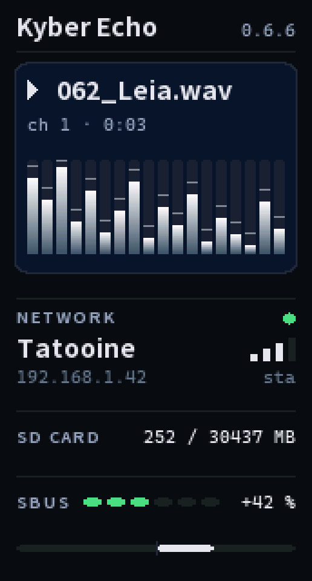
10Updating
When a new software version is published, the Dashboard notifies you and lets you install it.
When an update is available, a badge appears at the top of every page. Open the Dashboard. The Online Updates card shows the new version, release date, file size, and list of changes. Your currently installed version appears on the same page under Firmware.
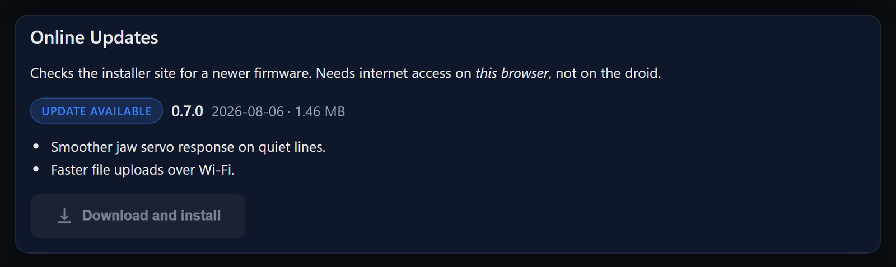
What happens when you press install
Select Download and install. The web interface completes four steps and identifies each one as it begins. No action is required between these steps.
- Downloading firmware… Your browser downloads the new version from the internet. The percentage shows the download progress.
- Uploading… The browser transfers the file to the droid over your local connection. The percentage restarts from zero, and this step is usually slower.
- Flashing firmware… Shown in amber, because this is the part not to interrupt. The droid is writing the new version into itself.
- Rebooting in 5s… It counts down, the droid restarts, and the page reloads itself. If it does not come back, reconnect to the droid as you did the first time — the update itself is already done.
Everything you set up survives it: your sounds, your buttons, your labels, your Wi-Fi. An update replaces the droid's software, not its settings.
What the card can say
| It says | It means |
|---|---|
| Up to date | Nothing to do. |
| Update available | A newer version is available. The install button is on the same card. |
| Offline | Your browser could not reach the internet within about six seconds. This is normal when your device is connected to the droid's network and has no other internet connection. Select Check again to retry. |
| Not published | The update service responded successfully, but no release is currently available. This differs from Offline, which means the browser could not contact the service. |
| Ahead of release | You are running a version newer than the published one. Unusual, and nothing to fix. |
Installing a file by hand
Use the manual upload area when you receive a .bin firmware file directly. Drop the file into the area or select it with the file picker. Other file types are rejected. Select Upload to transfer the file to the droid; the process then continues from the Uploading… step described above.
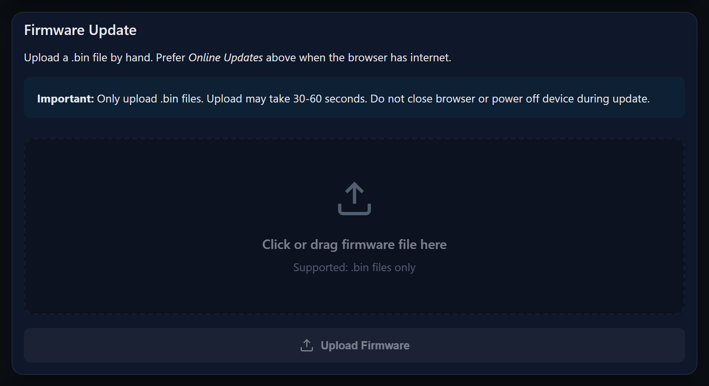
11Backup and reset
Four buttons at the bottom of the Dashboard provide backup, restore, restart, and reset functions.
| Button | What happens |
|---|---|
| Save Config | Downloads your channels, button assignments, labels, and jaw settings as one file. The file is saved to your Downloads folder with a name beginning with echo-config-, followed by the date and time. |
| Restore Config | Restores settings from a backup file, then restarts the droid. You can also use this function to copy a completed setup to another droid. |
| Reboot Device | Restarts the droid cleanly and may clear a temporary problem. |
| Factory Reset | Clears all settings, including the network configuration. Sound files remain on the card, but all button assignments are cleared. |
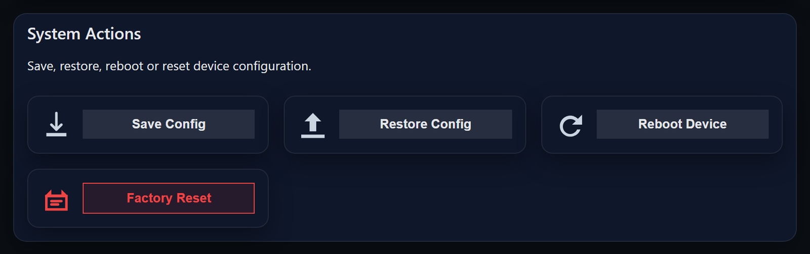
The backup file
Its name does not matter; its contents do. You can rename the file, archive it, or move it to another computer without affecting restoration. The web interface verifies that the file contains a valid Echo configuration and rejects invalid files without applying partial settings.
A backup taken from an older version of the droid's software is still usable. It restores what it contains and leaves everything else as it was, so nothing is lost simply because the file predates a setting.
Network settings in a backup file are deliberately skipped. You can therefore restore someone else's channel assignments, sound ranges, and Kyberpad labels without changing how you connect to your droid.
After restoring to a droid that has never joined your network, enter your Wi-Fi details manually on the Network page. Re-entering these two fields takes little time compared with recreating the rest of the configuration.
What a factory reset removes
A factory reset clears all settings, including the network configuration used to reach the droid.
12345678.
Getting back in is the same as the very first time, and takes a minute:
-
Join the network called
ECHO_xxxxThe password is12345678again. Any name you had given that network is gone too, so look forECHO_followed by four characters. -
Open
192.168.4.1The web interface loads without your settings, but every sound remains on the card. - Restore your backup, or start again A saved configuration restores these settings in one step. Without a backup, everything from section 04 onward must be configured manually.
Change the droid's network password again immediately afterward. A reset restores the default, so remember that 12345678 is active again.
12Wiring
This section is intended for anyone building or repairing the droid. The preceding sections assume that the board is already wired.
The board
The Waveshare ESP32-S3-LCD-1.47B is a compact board that includes the display, microSD slot, and RGB LED. These components require no additional wiring. The table below lists the external components that connect to the board.
What connects where
Pin numbers are GPIO numbers, the ones printed on the board.
| What | Connects to |
|---|---|
| Audio DAC — PCM5102 | BCK to 7, LRCK to 5, DIN to 6. This is the sound output; everything the droid plays leaves through it. |
| Radio receiver | Its SBUS output to 2. One wire: the droid only ever listens, it never answers the receiver. |
| Jaw servo | Signal to 8. Power and ground come from elsewhere — see below. |
| PSI LED | Data to 38. |
| MOSFET | Gate to 4. |
| microSD | On board already, in 4-bit mode: 14 CLK, 15 CMD, 16/18/17/21 for D0 to D3. Nothing to wire, listed so nobody reuses those pins. |
Still to write
- Power What feeds the board, what feeds the servo, and whether they share a ground. The servo is the part that draws current in bursts, so this is the question that decides the rest.
- The MOSFET What it actually switches on a finished droid, and whether it belongs in a user-facing document at all.
- Connectors and colors Which plug is used for each of the five, and what the wires look like, so the table can be read with the droid open in front of you.
- A photograph or a diagram The one thing a table cannot replace. Unlike every other image in this guide, it cannot be generated — it has to be taken.
13Troubleshooting
In rough order of how often each one happens.
No sound at all
Open the SD Card page and select Play on device for any file. If the file is also silent there, check the sound library and audio hardware. If it plays correctly, the problem is probably the button mapping. On the Sounds page, verify that the assigned numbers match the files on the card. A visible file that cannot be selected is usually named incorrectly; its filename must begin with exactly three digits.
Everything plays at about half volume
The radio is off, and a volume knob has been assigned to a channel. Without a valid radio signal, the droid defaults to 50% volume. Switch on the transmitter and the assigned knob takes control immediately.
I cannot turn the droid down
The web interface has no volume control; use a knob or slider on the radio. If all three volume channels are set to None on the Channels page, assign at least one. The same channel can control all three.
The web interface will not open
On the droid's own network, Wi-Fi may have turned off after one minute without a connection. Restart the droid, then reconnect within 60 seconds. On your home network, the address may have changed; read the current address on the droid's screen. The droid does not automatically reconnect after losing your network.
The radio does nothing
Open the Channels page and check the badge at the top right. A red Disconnected badge means the droid is not receiving a radio signal. Verify that the transmitter is on and bound. If the badge is green, move a stick and watch the bars. Movement on the wrong card means the channel assignments need to be corrected.
The dome sound stops while I hold the stick
That is deliberate, and it is the one place the dome behaves differently from the driving sound. Rolling follows where the stick is, so holding it keeps the sound going; the dome follows whether the stick is moving, and fades out about a third of a second after it stops. Keep turning and the sound continues. Nothing is wrong with the file.
A card or a tab is missing from the Sounds page
The Sounds page only ever shows what your droid can actually do. A missing Dome Sound or Sound Effect 2 card means that control is still on None back on Channels. Missing page tabs work the same way: no Kyberpad channel and there are none at all, a Kyberpad channel without a page switch and you get Page 1 alone.
A Kyberpad key plays the wrong sound — or plays several
Several sounds in sequence usually mean that slew is still enabled in the radio's mixer. Turn it off. Also check the Kyberpad card: if an amber message identifies two controls sharing one channel, the controls are conflicting and some key presses may be interpreted incorrectly. If the wrong key responds consistently, the radio values no longer match the values expected by the droid. Select Restore Kyberpad defaults unless you changed them deliberately. A key held while the radio starts or the signal returns is ignored until you release it once.
Everything is grayed out and nothing will upload
Your radio transmitter is on. Uploading files and installing updates both stop while the droid is hearing the radio, because the two cannot share the airwaves. An amber banner at the top of the page says so. Switch the transmitter off and the page becomes available again within a second or two, with no reload.
An update stopped partway
The previous firmware version remains active because the droid switches versions only after receiving the complete update. You should see Download failed or Upload failed; select the button again to retry. Repeated download failures usually indicate a problem with your device's internet connection because the browser, not the droid, downloads the file.
I reset the droid and now I cannot reach it
A factory reset clears the Wi-Fi along with everything else. The droid has forgotten your network, its own network is called ECHO_xxxx again, and its password is back to 12345678. Join that network, open 192.168.4.1, and restore your backup. Then change the default password immediately.
A change was not saved
Saving is automatic but not instant. The web interface waits about one second after your last change, then displays a confirmation. Closing the page or turning off the droid before that confirmation may discard the change. If no confirmation appears, the web interface may have lost contact with the droid.
None of the above
The Logs page keeps the droid's most recent messages. Open it, reproduce the problem, and read the new entries. Most failures are reported there in plain language.